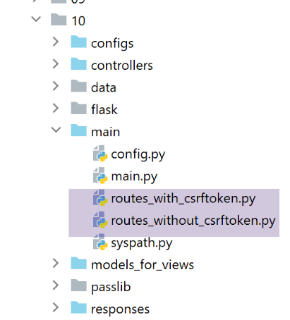
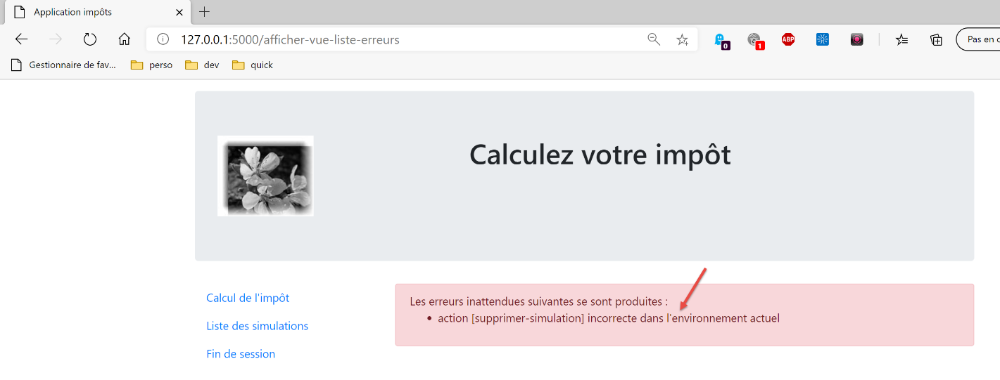

35. Application exercise: version 15
35.1. Introduction
This version aims to resolve issues related to refreshing the application’s pages in the browser (F5). Let’s take an example. The user has just deleted the simulation of id=3:

After deletion, the URL in the browser is [/supprimer-simulation/3/…]. If the user refreshes the page (F5), the URL [1] is replayed. We therefore request the removal of the simulation of id=3 again. The result is as follows:

Here is another example. The user has just calculated a tax:
- in [1], the URL [/calculer-impot] that was just queried with a POST;

If the user refreshes the page (F5), they receive a warning message:

The page refresh operation re-executes the last request made by the browser, in this case a [POST /calculer-impot]. When asked to replay a POST, browsers display a warning similar to the one above. This warns that it is replaying an action that has already been performed. Suppose this POST had made a purchase; it would be unfortunate to repeat that action.
Furthermore, we will limit the user’s ability to type URL into their browser. Let’s take one of the previous views as an example:
The links provided on this page are:
- [Liste des simulations] associated with URL and [/lister-simulations];
- [Fin de session] associated with URL and [/fin-session];
- [Valider] associated with URL (not shown above) [/calculer-impot];
When the tax calculation view is displayed, we will only accept the [/lister-simulations, /fin-session, /calculer-impot] action. If the user enters a different action in their browser, an error will be reported. We will perform this type of validation for all four views of the application.
We propose to solve the page refresh issue as follows:
- we will distinguish between two types of actions:
- ADS actions (Action Do Something) that modify the application’s state. ADS actions generally have parameters in the URL or the request body;
- ASV actions (Action Show View) that display a view without changing the application’s state. There will be as many ASV actions as there are V views. ASV actions have no parameters;
- Until now, the ADS actions were executed and then terminated by displaying a view V after preparing its model M. From now on, they will load the view’s M template into the session and instruct the browser to redirect to the ASV action responsible for displaying the V view;
- V views will only be displayed following an action ASV. They will retrieve their template from the session;
The advantage of this method is that the browser will display URL ASV in its address bar. Refreshing the page will then replay the ASV action. This action does not modify the application state and uses a session template. Therefore, the same page will be displayed again without any side effects. Finally, due to the redirects, the user will only see URL and ASV actions in their browser and will feel as though they are navigating from page to page;
35.2. Implementation

The [impots/http-servers/10] folder is initially created by copying the [impots/http-servers/09] folder. It is then modified.
35.2.1. The new routes

In both files [routes_with_csrftoken] and [routes_without_csrftoken], we need to create the four routes for the four ASV actions that display the four views. The other routes remain unchanged.
In [routes_with_csrftoken]:
# afficher-vue-calcul-impot
@app.route('/afficher-vue-calcul-impot/<string:csrf_token>', methods=['GET'])
def afficher_vue_calcul_impot(csrf_token: str) -> tuple:
# execute the controller associated with the action
return front_controller()
# display-view-authentication
@app.route('/afficher-vue-authentification/<string:csrf_token>', methods=['GET'])
def afficher_vue_authentification(csrf_token: str) -> tuple:
# execute the controller associated with the action
return front_controller()
# display-view-list-simulations
@app.route('/afficher-vue-liste-simulations/<string:csrf_token>', methods=['GET'])
def afficher_vue_liste_simulations(csrf_token: str) -> tuple:
# execute the controller associated with the action
return front_controller()
# display-view-error_list
@app.route('/afficher-vue-liste-erreurs/<string:csrf_token>', methods=['GET'])
def afficher_vue_liste_erreurs(csrf_token: str) -> tuple:
# execute the controller associated with the action
return front_controller()
Lines 1–23: We have created four routes for four actions ASV:
- [/afficher-vue-authentification], line 8, displays the authentication view;
- [/afficher-vue-calcul-impot], line 2, displays the tax calculation view;
- [/afficher-vue-liste-simulations], line 14, displays the simulation view;
- [/afficher-vue-liste-erreurs], line 20, displays the unexpected errors view;
The same is done in the [routes_with_csrftoken] file for routes without a token:
# routes ASV -------------------------
# afficher-vue-calcul-impot
@app.route('/afficher-vue-calcul-impot', methods=['GET'])
def afficher_vue_calcul_impot() -> tuple:
# execute the controller associated with the action
return front_controller()
# display-view-authentication
@app.route('/afficher-vue-authentification', methods=['GET'])
def afficher_vue_authentification() -> tuple:
# execute the controller associated with the action
return front_controller()
# display-view-list-simulations
@app.route('/afficher-vue-liste-simulations', methods=['GET'])
def afficher_vue_liste_simulations() -> tuple:
# execute the controller associated with the action
return front_controller()
# display-view-error_list
@app.route('/afficher-vue-liste-erreurs', methods=['GET'])
def afficher_vue_liste_erreurs() -> tuple:
# execute the controller associated with the action
return front_controller()
35.2.2. The new controllers

The [AfficherVueAuthentificationController] controller executes the ASV and [/afficher-vue-authentification] actions:
from flask_api import status
from werkzeug.local import LocalProxy
from InterfaceController import InterfaceController
class AfficherVueAuthentificationController(InterfaceController):
def execute(self, request: LocalProxy, session: LocalProxy, config: dict) -> (dict, int):
# retrieve elements from path
params = request.path.split('/')
action = params[1]
# view change - just a status code to set
return {"action": action, "état": 1100, "réponse": ""}, status.HTTP_200_OK
We noted that the ASV actions have no parameters and do not change the application’s state. We simply display the desired view by setting a status code on line 14.
The [AfficherVueCalculImpotController] controller executes the ASV and [/afficher-vue-calcul-impot] actions:
from flask_api import status
from werkzeug.local import LocalProxy
from InterfaceController import InterfaceController
class AfficherVueCalculImpotController(InterfaceController):
def execute(self, request: LocalProxy, session: LocalProxy, config: dict) -> (dict, int):
# retrieve elements from path
params = request.path.split('/')
action = params[1]
# view change - just a status code to set
return {"action": action, "état": 1400, "réponse": ""}, status.HTTP_200_OK
The [AfficherVueListeSimulationsController] controller executes the ASV and [/afficher-vue-liste-simulations] actions:
from flask_api import status
from werkzeug.local import LocalProxy
from InterfaceController import InterfaceController
class AfficherVueListeSimulationsController(InterfaceController):
def execute(self, request: LocalProxy, session: LocalProxy, config: dict) -> (dict, int):
# retrieve elements from path
params = request.path.split('/')
action = params[1]
# view change - just a status code to set
return {"action": action, "état": 1200, "réponse": ""}, status.HTTP_200_OK
The [AfficherVueListeErreursController] controller executes the ASV and [/afficher-vue-liste-erreurs] actions:
from flask_api import status
from werkzeug.local import LocalProxy
from InterfaceController import InterfaceController
class AfficherVueListeErreursController(InterfaceController):
def execute(self, request: LocalProxy, session: LocalProxy, config: dict) -> (dict, int):
# retrieve elements from path
params = request.path.split('/')
action = params[1]
# view change - just a status code to set
return {"action": action, "état": 1300, "réponse": ""}, status.HTTP_200_OK
Let’s summarize the status codes:
- code 1100 should display the authentication view;
- code 1400 should display the tax calculation view;
- code 1200 should display the simulation view;
- code 1300 should display the unexpected errors view;
35.2.3. The new configuration MVC
Because it had become too large, configuration MVC has been split into four files:
- [controllers]: the list of C controllers for the application MVC;
- [ads_actions]: lists the actions in ADS (Action Do Something);
- [asv_actions]: lists the actions in ASV (Action Show View);
- [responses]: lists the response classes HTTP of the application;
Let’s start with the simplest one, the response file HTTP [responses]:
def configure(config: dict) -> dict:
# application configuration MVC
# answers HTTP
from HtmlResponse import HtmlResponse
from JsonResponse import JsonResponse
from XmlResponse import XmlResponse
# different types of response (json, xml, html)
responses = {
"json": JsonResponse(),
"html": HtmlResponse(),
"xml": XmlResponse()
}
# return response dictionary HTTP
return {
# answers HTTP
"responses": responses,
}
No surprises.
The [controllers] file for the controllers is also as expected. We simply added the new controllers for the ASV actions.
def configure(config: dict) -> dict:
# application configuration MVC
# the main controller
from MainController import MainController
# action controllers ADS
from AuthentifierUtilisateurController import AuthentifierUtilisateurController
from CalculerImpotController import CalculerImpotController
from CalculerImpotsController import CalculerImpotsController
from FinSessionController import FinSessionController
from GetAdminDataController import GetAdminDataController
from InitSessionController import InitSessionController
from ListerSimulationsController import ListerSimulationsController
from SupprimerSimulationController import SupprimerSimulationController
from AfficherCalculImpotController import AfficherCalculImpotController
# action controllers ASV
from AfficherVueCalculImpotController import AfficherVueCalculImpotController
from AfficherVueAuthentificationController import AfficherVueAuthentificationController
from AfficherVueListeErreursController import AfficherVueListeErreursController
from AfficherVueListeSimulationsController import AfficherVueListeSimulationsController
# authorized shares and their controllers
controllers = {
# initialization of a calculation session
"init-session": InitSessionController(),
# user authentication
"authentifier-utilisateur": AuthentifierUtilisateurController(),
# link to tax calculation view
"afficher-calcul-impot": AfficherCalculImpotController(),
# tax calculation in individual mode
"calculer-impot": CalculerImpotController(),
# batch mode tax calculation
"calculer-impots": CalculerImpotsController(),
# list of simulations
"lister-simulations": ListerSimulationsController(),
# deleting a simulation
"supprimer-simulation": SupprimerSimulationController(),
# end of calculation session
"fin-session": FinSessionController(),
# obtaining data from tax authorities
"get-admindata": GetAdminDataController(),
# main controller
"main-controller": MainController(),
# display authentication view
"afficher-vue-authentification": AfficherVueAuthentificationController(),
# display tax calculation view
"afficher-vue-calcul-impot": AfficherVueCalculImpotController(),
# displaying the simulation view
"afficher-vue-liste-simulations": AfficherVueListeSimulationsController(),
# displaying the error view
"afficher-vue-liste-erreurs": AfficherVueListeErreursController()
}
# make the controller configuration
return {
# controllers
"controllers": controllers,
}
The configuration [asv_actions] for the actions ASV is as follows:
def configure(config: dict) -> dict:
# application configuration MVC
# HTML views and their models depend on the state rendered by the controller
# actions ASV (Action Show view)
asv = [
{
# authentication view
"états": [
1100, # /show-view-authentication
],
"view_name": "views/vue-authentification.html",
},
{
# tax calculation
"états": [
1400, # /display-view-tax-calculation
],
"view_name": "views/vue-calcul-impot.html",
},
{
# view of simulation list
"états": [
1200, # /display-view-list-simulations
],
"view_name": "views/vue-liste-simulations.html",
},
{
# view of error list
"états": [
1300, # /display-view-error-list
],
"view_name": "views/vue-erreurs.html",
},
]
# return the ASV configuration
return {
# views and models
"asv": asv,
}
- The [asv_actions] file contains the four new actions, whose functionality is summarized below:
- they have no parameters;
- they display a specific view whose template is in session;
- The list [asv], lines 6–35, associates a view with each action ASV;
The file [ads_actions] contains the actions ADS:
def configure(config: dict) -> dict:
# application configuration MVC
# view models
from ModelForAuthentificationView import ModelForAuthentificationView
from ModelForCalculImpotView import ModelForCalculImpotView
from ModelForErreursView import ModelForErreursView
from ModelForListeSimulationsView import ModelForListeSimulationsView
# actions ADS (Action Do Something)
ads = [
{
"états": [
400, # /end-session success
],
# redirection to action ADS
"to": "/init-session/html",
},
{
"états": [
700, # /init-session - success
201, # /authentifier-user failure
],
# redirection to action ASV
"to": "/afficher-vue-authentification",
# model of the following view
"model_for_view": ModelForAuthentificationView()
},
{
"états": [
200, # /authentifier-user success
300, # /calculate-tax-success
301, # /calculate-tax failure
800, # /display-tax-calculation link
],
# redirection to action ASV
"to": "/afficher-vue-calcul-impot",
# model of the following view
"model_for_view": ModelForCalculImpotView()
},
{
"états": [
500, # /lister-simulations success
600, # /suppress-simulation success
],
# redirection to action ASV
"to": "/afficher-vue-liste-simulations",
# model of the following view
"model_for_view": ModelForListeSimulationsView()
},
]
# view of unexpected errors
view_erreurs = {
# redirection to action ASV
"to": "/afficher-vue-liste-erreurs",
# model of the following view
"model_for_view": ModelForErreursView()
}
# return the MVC configuration
return {
# shares ADS
"ads": ads,
# the sight of unexpected errors
"view_erreurs": view_erreurs,
}
- lines 11–51: the list of ADS actions (Action Do Something). All actions from previous versions are included. However, their behavior has changed:
- they do not display a view V. They only prepare the model M for this view V;
- they request the display of view V via a redirection to the ASV action associated with view V;
- not all ADS actions lead to a redirection to a ASV action: lines 12–18, the action ADS [/fin-session] leads to a redirection to the action ADS [/init-session/html]. To distinguish between the redirects ADS -> ADS and ADS -> ASV, you can use the [model_for_view] template. This does not exist for the redirects ADS -> ADS;
The file [main/config], which contains all configurations, changes as follows:
def configure(config: dict) -> dict:
# syspath configuration
import syspath
config['syspath'] = syspath.configure(config)
# application setup
import parameters
config['parameters'] = parameters.configure(config)
# database configuration
import database
config["database"] = database.configure(config)
# instantiation of application layers
import layers
config['layers'] = layers.configure(config)
# configuration MVC of the [web] layer
config['mvc'] = {}
# web] layer controller configuration
import controllers
config['mvc'].update(controllers.configure(config))
# actions ASV (Action Show View)
import asv_actions
config['mvc'].update(asv_actions.configure(config))
# actions ADS (Action Do Something)
import ads_actions
config['mvc'].update(ads_actions.configure(config))
# response configuration HTTP
import responses
config['mvc'].update(responses.configure(config))
# we return the configuration
return config
35.2.4. The new models

The models will generate new information. Take, for example, the authentication view model:
from flask import Request
from werkzeug.local import LocalProxy
from AbstractBaseModelForView import AbstractBaseModelForView
class ModelForAuthentificationView(AbstractBaseModelForView):
def get_model_for_view(self, request: Request, session: LocalProxy, config: dict, résultat: dict) -> dict:
# we encapsulate the paged data in the model
modèle = {}
…
# csrf token
modèle['csrf_token'] = super().get_csrftoken(config)
# possible actions from the view
modèle['actions_possibles'] = ["afficher-vue-authentification", "authentifier-utilisateur"]
# we render the model
return modèle
- The new feature is on line 17: each model will generate a list of possible actions when the view V, for which it is the model M, is displayed. To see these actions, we need to go back to the view V. In the case of the authentication view:

- we see that the authentication view offers only one action, that of the button [Valider]. This action is [/authentifier-utilisateur];
We wrote:
In the view above, we see that if the user refreshes the view, the action [1] [/afficher-vue-authentification] will be replayed. It must therefore be authorized. We could have chosen not to authorize it, in which case the user would have received an error every time they reloaded the page. We determined that this was not desirable.
The possible actions are placed in the view template. We know that this template will be cached.
We do this for each of the four views. The possible actions are then as follows:
Authentication view
Tax calculation view
# possible actions from the view
modèle['actions_possibles'] = ["afficher-vue-calcul-impot", "calculer-impot", "lister-simulations", "fin-session"]
Simulation list view
# possible actions from the view
actions_possibles = ["afficher-vue-liste-simulations", "afficher-calcul-impot", "fin-session"]
if len(modèle['simulations']) != 0:
actions_possibles.append("supprimer-simulation")
modèle['actions_possibles'] = actions_possibles
Error list view
# possible actions from the view
modèle['actions_possibles'] = ["afficher-vue-liste-erreurs", "afficher-calcul-impot", "lister-simulations", "fin-session"]
35.2.5. The new main controller

The [MainController] controller undergoes a few changes:
# import dependencies
import threading
import time
from random import randint
from flask_api import status
from flask_wtf.csrf import generate_csrf, validate_csrf
from werkzeug.local import LocalProxy
from wtforms import ValidationError
from InterfaceController import InterfaceController
from Logger import Logger
from SendAdminMail import SendAdminMail
def send_adminmail(config: dict, message: str):
# send an e-mail to the application administrator
config_mail = config['parameters']['adminMail']
config_mail["logger"] = config['logger']
SendAdminMail.send(config_mail, message)
# main application controller
class MainController(InterfaceController):
def execute(self, request: LocalProxy, session: LocalProxy, config: dict) -> (dict, int):
# the request is processed
type_response1 = None
logger = None
try:
# retrieve elements from path
params = request.path.split('/')
# action is the 1st element
action = params[1]
# logger
logger = Logger(config['parameters']['logsFilename'])
…
# the /display-view-error-list action is special
# we don't check anything, otherwise we risk entering an infinite loop of redirects
erreur = False
if action != "afficher-vue-liste-erreurs":
# if error, (result] is the result to be sent to the customer
(erreur, résultat, type_response1) = MainController.check_action(params, session, config)
# if no error - action executed
if not erreur:
# execute the controller associated with the action
controller = config['mvc']['controllers'][action]
résultat, status_code = controller.execute(request, session, config)
except BaseException as exception:
# (unexpected) exceptions
résultat = {"action": action, "état": 131, "réponse": [f"{exception}"]}
erreur = True
finally:
pass
# runtime error
if erreur:
# erroneous request
status_code = status.HTTP_400_BAD_REQUEST
if config['parameters']['with_csrftoken']:
# add the csrf_token to the result
résultat['csrf_token'] = generate_csrf()
….
# we send the HTTP response
return response, status_code
@staticmethod
def check_action(params: list, session: LocalProxy, config: dict) -> (bool, dict, str):
…
# result of the method
return erreur, résultat, type_response1
- lines 39–44: the first checks are performed on the action. We’ll come back to this. The static method [MainController.check_action] returns a tuple of three elements:
- [erreur]: True if an error was detected, False otherwise;
- [résultat]: an error result if (error==True), None otherwise;
- [type_response1]: the type (json, xml, html, None) of the session, type found in the session;
- line 39: no check is performed to determine if the action is ASV or [afficher-vue-liste-erreurs], which would display the list of errors. In fact, if an error were found during this action, we would be redirected back to the action [/afficher-vue-liste-erreurs] and enter an infinite loop of redirects;
- The static method [check_action] is as follows:
@staticmethod
def check_action(params: list, session: LocalProxy, config: dict) -> (bool, dict, str):
# retrieve the current action
action = params[1]
# no errors and no results to start with
erreur = False
résultat = None
# session type must be known before certain actions ADS
type_response1 = session.get('typeResponse')
if type_response1 is None and action != "init-session":
# we note the error
résultat = {"action": action, "état": 101,
"réponse": ["pas de session en cours. Commencer par action [init-session]"]}
erreur = True
# some ADS actions require authentication
user = session.get('user')
if user is None and action not in ["init-session",
"authentifier-utilisateur",
"afficher-vue-authentification"]:
# we note the error
résultat = {"action": action, "état": 101,
"réponse": [f"action [{action}] demandée par utilisateur non authentifié"]}
erreur = True
# from a view, only certain actions are possible
if not erreur and action != "init-session":
# for the moment no action possible
actions_possibles = None
# retrieve the model of the future session view, if it exists
modèle = session.get('modèle')
# if a model has been found, its possible actions are retrieved
if modèle:
actions_possibles = modèle.get('actions_possibles')
# if you have a list of possible actions, check that the current action is one of them
if actions_possibles and action not in actions_possibles:
# we note the error
résultat = {"action": action, "état": 151,
"réponse": [f"action [{action}] incorrecte dans l'environnement actuel"]}
erreur = True
# mistake?
if not erreur and config['parameters']['with_csrftoken']:
# check the validity of the csrf token
# the csrf_token is the last element of the path
csrf_token = params.pop()
try:
# an exception will be thrown if csrf_token is invalid
validate_csrf(csrf_token)
except ValidationError as exception:
# csrf token invalid
résultat = {"action": action, "état": 121, "réponse": [f"{exception}"]}
# we note the error
erreur = True
# result of the method
return erreur, résultat, type_response1
- line 2: the [check_action] method performs several checks on the validity of the current action;
- lines 6–26, 45–57: Previous versions already performed these checks;
- lines 28–42: a new check is added. We verify whether the current action is possible given the application’s current state. If the current action is not possible, we generate a status code of 151 (line 40), which ensures that the current action will be redirected to the unexpected errors view;
35.2.6. The new response HTML

The current changes only affect HTML sessions. jSON or XML sessions are not affected. The [HtmlResponse] class changes as follows:
# dependencies
from flask import make_response, redirect, render_template
from flask.wrappers import Response
from flask_api import status
from flask_wtf.csrf import generate_csrf
from werkzeug.local import LocalProxy
from InterfaceResponse import InterfaceResponse
class HtmlResponse(InterfaceResponse):
def build_http_response(self, request: LocalProxy, session: LocalProxy, config: dict, status_code: int,
résultat: dict) -> (Response, int):
# the HTML response depends on the status code returned by the controller
état = résultat["état"]
# find out if the state was produced by a ASV action
# in which case a
asv_configs = config['mvc']["asv"]
trouvé = False
i = 0
# browse the list of views
nb_views = len(asv_configs)
while not trouvé and i < nb_views:
# view n° i
asv_config = asv_configs[i]
# states associated with view n° i
états = asv_config["états"]
# is the state you're looking for in the states associated with view n° i?
if état in états:
trouvé = True
else:
# next view
i += 1
# found?
if trouvé:
# this is a ASV action - you need to display a view whose model is already in session
# generate the HTML response code
html = render_template(asv_config["view_name"], modèle=session['modèle'])
# build the HTTP response
response = make_response(html)
response.headers['Content-Type'] = 'text/html; charset=utf-8'
# we return the result
return response, status_code
# not found - this is an action status code ADS
# this will be followed by a redirection
redirected = False
for ads in config['mvc']['ads']:
# conditions requiring redirection
états = ads["états"]
if état in états:
# redirection
redirected = True
break
# redirection dictionary for unexpected errors
if not redirected:
ads = config['mvc']['view_erreurs']
# is it a redirect to a ASD or ASV action?
# if there's a template, then it's a redirection to a ASV action
# then calculate the model of view V to be displayed by action ASV
model_for_view = ads.get("model_for_view")
if model_for_view:
# calculation of the next view model
modèle = model_for_view.get_model_for_view(request, session, config, résultat)
# the model is sessioned for the following view
session['modèle'] = modèle
# now it's time to generate the URL redirection, not forgetting the CSRF token if requested
if config['parameters']['with_csrftoken']:
csrf_token = f"/{generate_csrf()}"
else:
csrf_token = ""
# redirect response
return redirect(f"{ads['to']}{csrf_token}"), status.HTTP_302_FOUND
- lines 18–35: we check if the status generated by the last executed action is that of an action ASV;
- lines 36–46: if so, the view V associated with the action ASV is displayed using the template found in the session associated with the key [‘modèle’];
- lines 48–60: when we reach this point, we know that the state produced by the last executed action is that of an action ADS. This will then trigger a redirection. We search the configuration file for its definition;
- line 62: when we reach this point, we have the configuration for the redirect to be performed. There are two cases:
- it is a redirection to another action, ADS. In this case, there is no view template to calculate;
- it is a redirect to an action ASV. In this case, a view template must be calculated (lines 67–68). This template is then added to the session (line 70);
- lines 72–76: the URL redirect is calculated;
- lines 78–79: the redirect response is sent to the client;
35.3. Tests
Perform the following tests using a browser:
- Use the application normally. Verify that the only URL displayed by the browser are URL, ASV, and [/afficher-vue-nom_de_la_vue];
- refresh the pages (F5) and verify that the same page is displayed again. There are no side effects;
Additionally, use the [impots/http-clients/09] client. Since the changes made only affect the HTML sessions, the clients and [main, main2, main3, Test1HttpClientDaoWithSession, Test2HttpClientDaoWithSession] sessions should continue to function.
Now let’s look at a case where the action is not possible. The following view is displayed:

Instead of [1], we enter URL and [/supprimer-simulation/1]. The action [/supprimer-simulation] is not among the actions offered by the view, which are actions 1–4. It will therefore be rejected. The server’s response is as follows:
